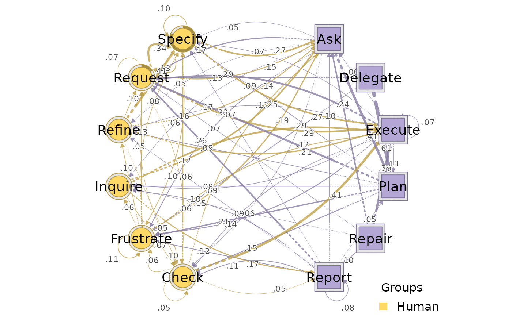
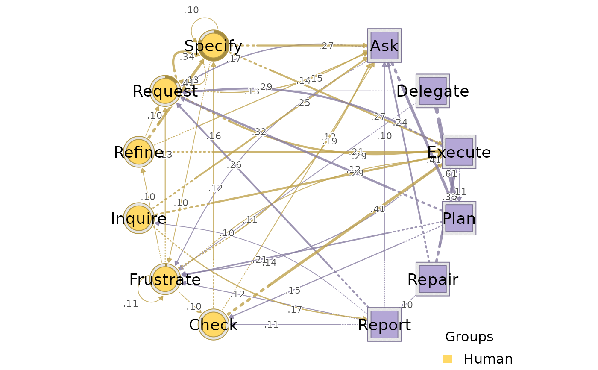
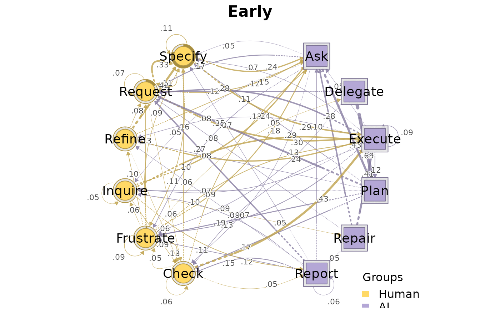
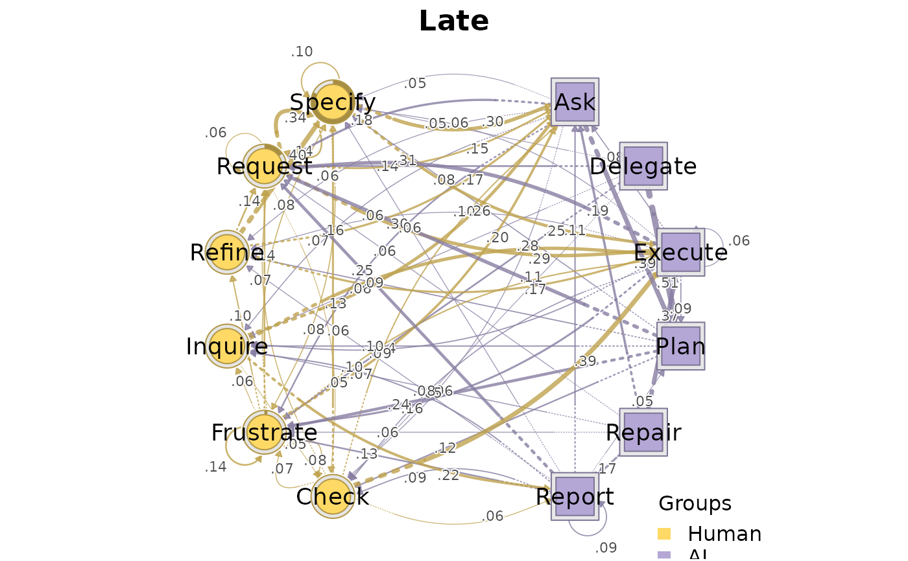

plot_htna() plots a heterogeneous transition network: the codes of
every actor type as nodes and the transitions between them as directed
edges whose width and label give the transition weight. Each actor type
has its own colour and node shape and occupies its own arc of the
circular layout, so the transitions within an actor type run along its
arc and the hand-overs between actor types cross the center. The plot
shows which transitions dominate the interaction and how the actors pass
control to each other.
plot_htna() draws one network, or one plot per cohort for a grouped
network, each titled with its cohort name; arrange several plots with
par(mfrow = ...). Edges with a weight below minimum are hidden. The
first actor type is placed on the left of the circular layout. plot()
on an htna network or htna_group calls plot_htna(). It is called for
the plot and returns, invisibly, the value of cograph::plot_htna() for
one network, or x for a grouped network.
To show the difference between two networks use plot_htna_diff(); to
show only the edges that survive bootstrapping use plot_htna_bootstrap().
Arguments
- x
An htna network from
build_htna(), or anhtna_group.- layout
Node layout. Default
"circular";"polygon"places three or more actor types on the sides of a polygon.- group_colors
Colours of the actor types, in actor order. Default htna_palette.
- group_shapes
Node shapes of the actor types, in actor order. Default
c("circle", "square", "diamond", "triangle", "pentagon", "hexagon", "star", "cross").- minimum
Smallest edge weight drawn. Default
0.05.- ...
Further drawing arguments of
cograph::plot_htna()andcograph::splot(), such astitle,thresholdoredge_labels.
Value
Called for the plot. Invisibly, the value of
cograph::plot_htna() for one network, or x for a grouped network.
Examples
data(human_ai)
net <- build_htna(human_ai, actor_type = "actor_type")
#> Metadata aggregated per session: ties resolved by first occurrence in 'session_date' (1 sessions), 'cluster' (42 sessions), 'actor_type' (24 sessions)
plot_htna(net)

plot_htna(net, minimum = 0.1)

grp <- build_htna(human_ai, actor_type = "actor_type", group = "phase")
#> Metadata aggregated per session: ties resolved by first occurrence in 'cluster' (24 sessions), 'actor_type' (9 sessions)
#> Metadata aggregated per session: ties resolved by first occurrence in 'session_date' (1 sessions), 'cluster' (18 sessions), 'actor_type' (15 sessions)
plot(grp)

